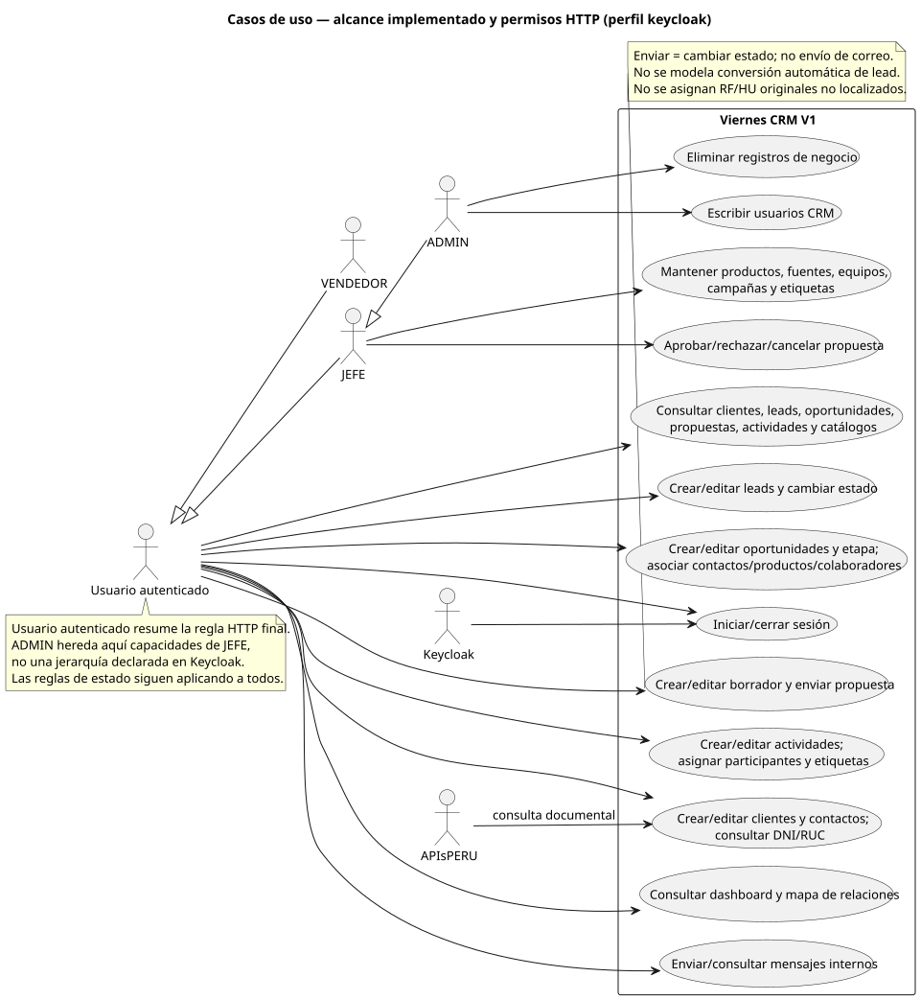
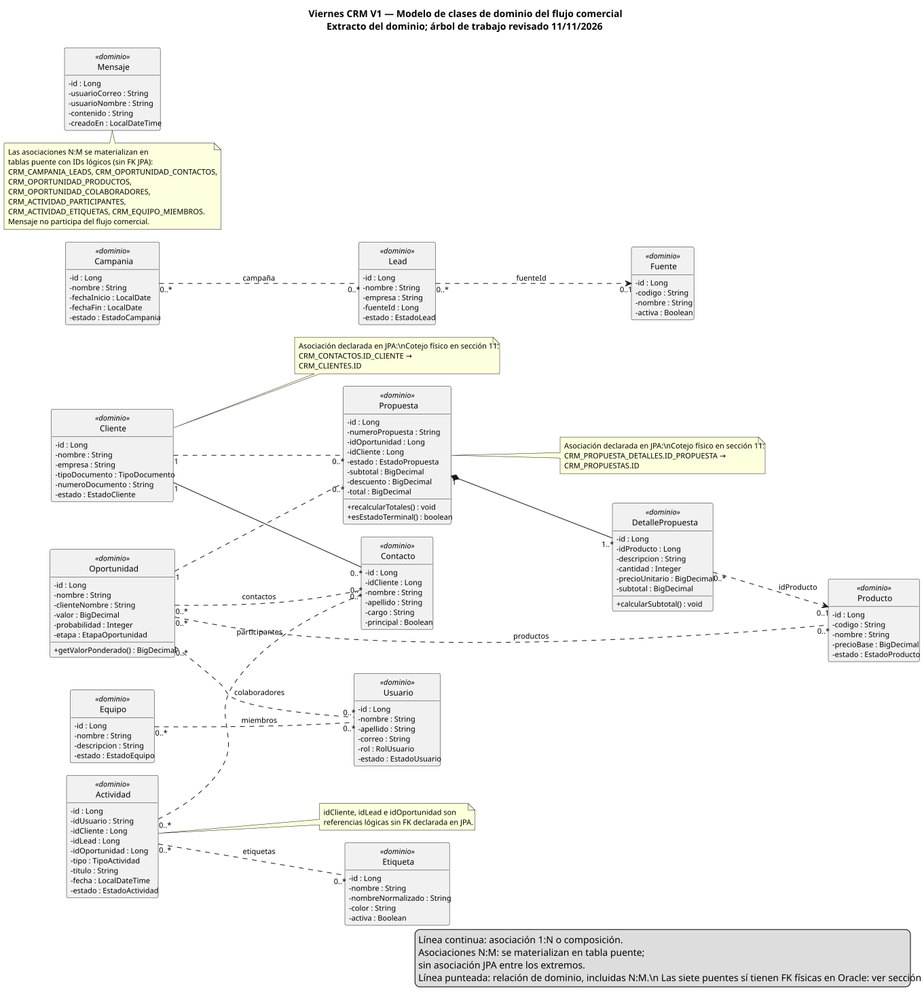
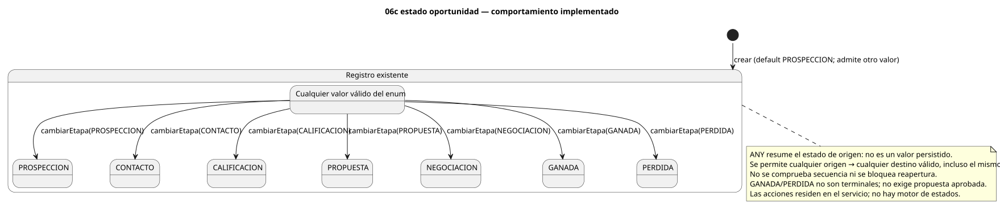

VIERNES CRM V1 · Evidencias académicas · 11/11/2026
Encargo docente ↔ implementación comprobada en E:\Viernes\Viernes
07. UML
Se entregan los seis bloques solicitados como ocho figuras: el bloque de estados se desglosa en tres. Cada figura tiene PlantUML editable y SVG/PNG regenerados. Reutiliza y corrige entrega_analisis_v2; no modifica los originales.
Casos de uso generales
Agrupa capacidades existentes y diferencia permisos por operación. La política depende del perfil keycloak. Se eliminaron HU/RF no trazables y funcionalidades deseadas del diagrama de alcance implementado.
PUML · SVG · PNG

viernes-backend/src/main/java/com/viernes/auth/keycloak/KeycloakSecurityConfig.java:121
viernes-backend/src/main/java/com/viernes/clientes/adapters/in/web/ClienteController.java:1
Actividad del proceso de propuestas
Representa validación, cálculo y decisiones de usuario. Un BORRADOR puede conservarse o editarse; solo ADMIN puede eliminarlo. JEFE/ADMIN deciden las transiciones críticas. Enviar significa cambiar estado y no demuestra entrega de un documento al cliente.
PUML · SVG · PNG

viernes-backend/src/main/java/com/viernes/propuestas/application/service/PropuestaService.java:32
viernes-backend/src/main/java/com/viernes/propuestas/application/dto/PropuestaRequest.java:12
Clases del dominio comercial
Extracto de 14 clases de dominio: no inventario de todas las clases Java. Las siete asociaciones entre extremos son N:M y se materializan en entidades puente. Se retiraron métodos desactivar/cambiarEstado inexistentes en Cliente y Lead. La composición de detalles exige uno o más en el contrato de creación, no por cardinalidad SQL.
PUML · SVG · PNG

viernes-backend/src/main/java/com/viernes/clientes/domain/Cliente.java:9
viernes-backend/src/main/java/com/viernes/leads/domain/Lead.java:8
viernes-backend/src/main/java/com/viernes/propuestas/domain/Propuesta.java:35
viernes-backend/src/main/java/com/viernes/oportunidades/domain/Oportunidad.java:22
Secuencia de creación
Distingue entrada REST, puerto de entrada, servicio, validación, catálogo y adapter de persistencia. El SQL es conceptual: no se conectó Oracle. Numeración COUNT+1 y persistencia dentro de @Transactional; la asociación padre-detalle usa cascada JPA.
PUML · SVG · PNG

viernes-backend/src/main/java/com/viernes/propuestas/adapters/in/web/PropuestaController.java:27
viernes-backend/src/main/java/com/viernes/propuestas/application/service/PropuestaService.java:209
viernes-backend/src/main/java/com/viernes/propuestas/adapters/out/persistence/PropuestaPersistenceAdapter.java:25
Secuencia de consulta del mapa
La raíz agrupa contactos, oportunidades inferidas, actividades y propuestas. Expandir pide un subgrafo; el cliente combina nodos/aristas. El DTO contiene totalNodes/totalEdges, no un campo counts. La asociación por nombre es heurística y no integridad relacional.
PUML · SVG · PNG

viernes-backend/src/main/java/com/viernes/relationshipmap/adapters/in/web/RelationshipMapController.java:21
viernes-backend/src/main/java/com/viernes/relationshipmap/application/service/RelationshipMapService.java:47
viernes-backend/src/main/java/com/viernes/relationshipmap/application/service/RelationshipMapService.java:677
Estados de propuesta
BORRADOR→ENVIADA; ENVIADA→APROBADA/RECHAZADA; BORRADOR o ENVIADA→CANCELADA. Los tres últimos son terminales. Eliminar se representa como fin de existencia, no como un bucle. Estado incompatible devuelve 409.
PUML · SVG · PNG

viernes-backend/src/main/java/com/viernes/propuestas/application/service/PropuestaService.java:118
viernes-backend/src/main/java/com/viernes/propuestas/domain/Propuesta.java:45
Estados de lead
El enum enumera valores pero no impone un ciclo. Cualquier valor válido se asigna desde cualquier estado. CONVERTIDO no genera oportunidad, contacto ni venta.
PUML · SVG · PNG

viernes-backend/src/main/java/com/viernes/leads/application/service/LeadService.java:47
viernes-backend/src/main/java/com/viernes/leads/application/service/LeadService.java:66
Etapas de oportunidad
La asignación de etapa carece de guardas de transición. Crear una propuesta no avanza el pipeline ni aprobarla gana la oportunidad. La probabilidad y etapa son independientes.
PUML · SVG · PNG

viernes-backend/src/main/java/com/viernes/oportunidades/application/service/OportunidadService.java:69
viernes-backend/src/main/java/com/viernes/oportunidades/application/service/OportunidadService.java:88